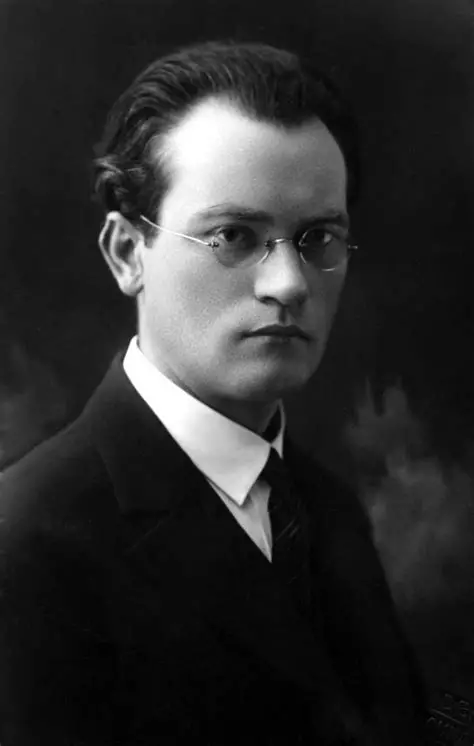

Gimimo data: 1893-01-06
Mirties data: 1967-06-07
Regionas: Marijampolės apskritis
Žanras: Romanas; poezija
Trumpa biografija
Vincas Mykolaitis-Putinas buvo vienas žymiausių XX a. Lietuvos rašytojų...
Kūriniai
- Altorių šešėly
Nuotraukos